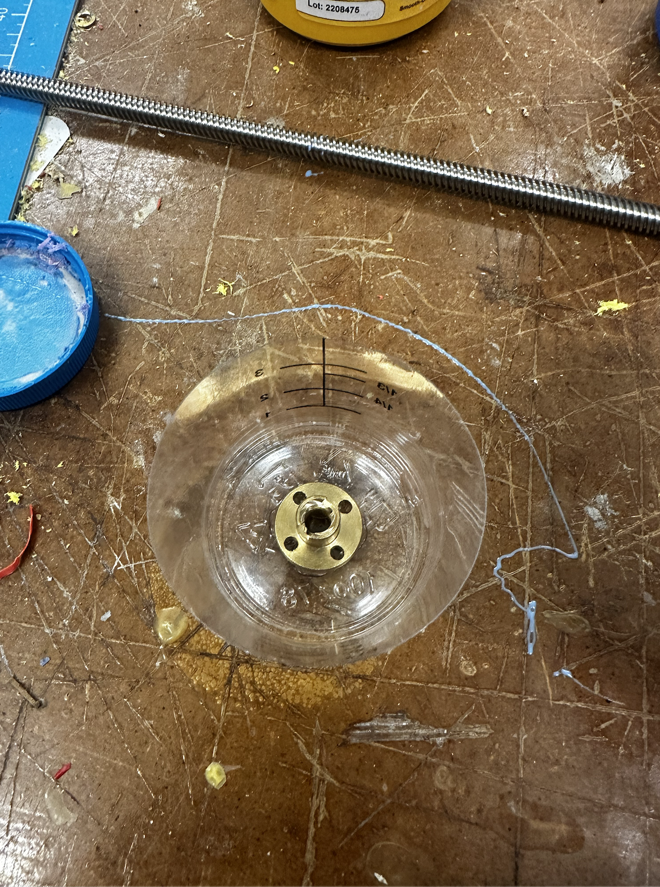
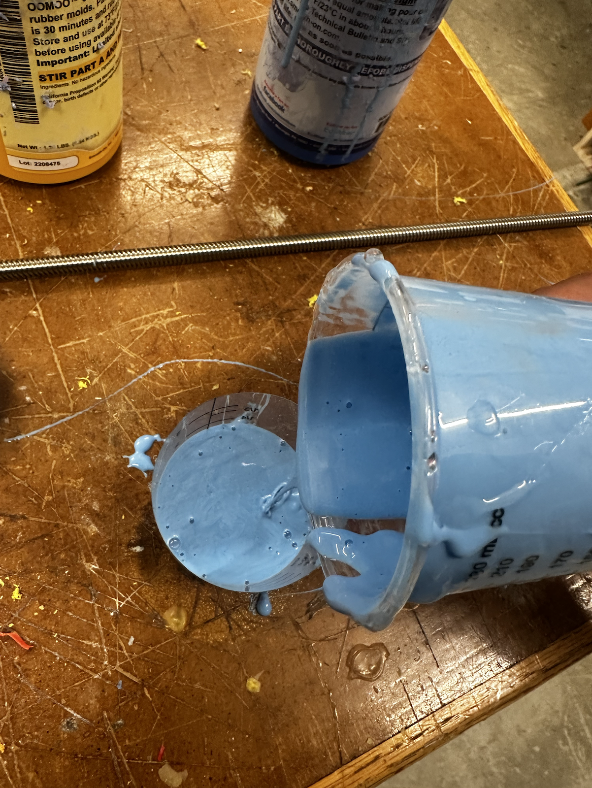
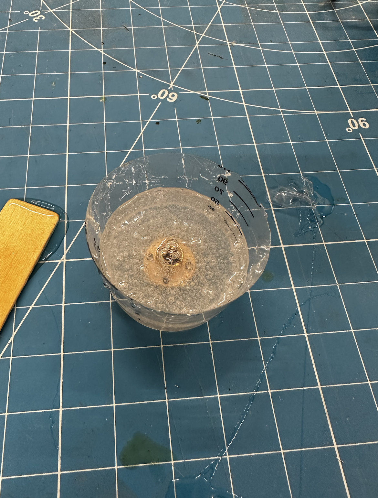
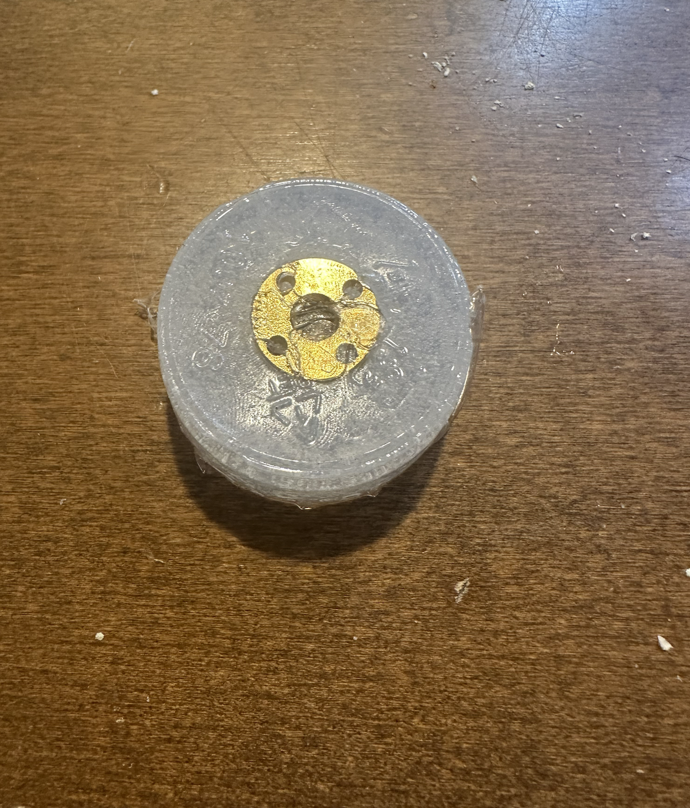
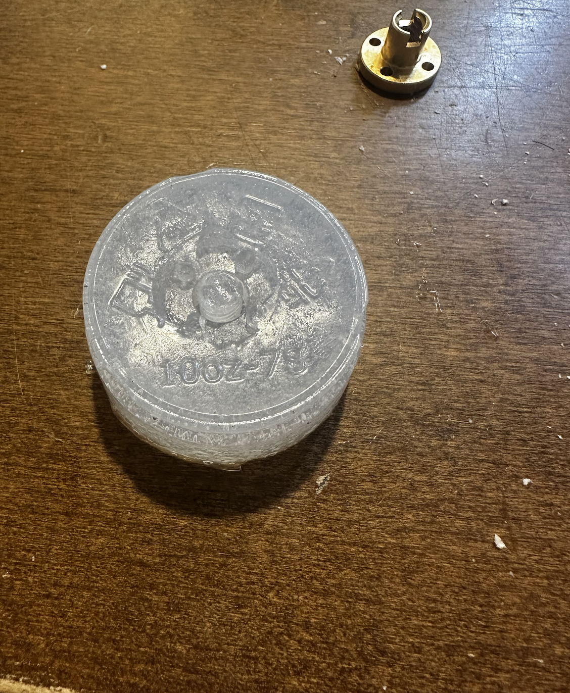
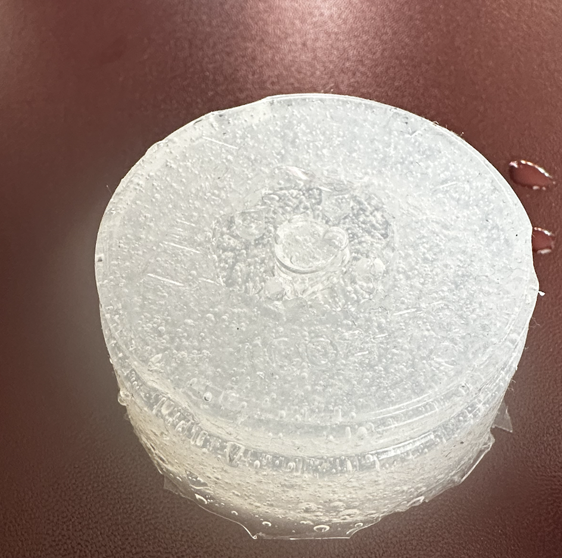
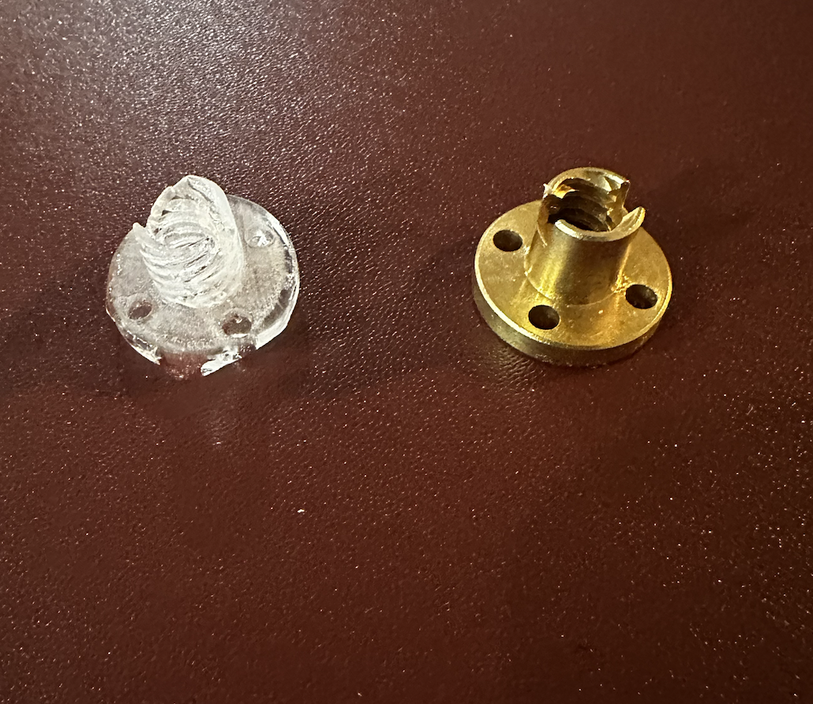

Molding and Casting
For my molding and casting I decided to use a lead-screw fitting for my assignment. I wanted to see if the cast would be able to actually thread onto the lead screw.

I started by hot gluing the brass fitting to the bottom of my plactic cup. This made sure that it was in place and would not move when I poured the molding material after.
Overview:
Procedure:
I started molding with equal parts of part A and part B. I used clear part B and blue part A. My first mold done below did not work as I may have mixed the wrong part A and part B together.
The above attempt did not work so I tried again with the right part A and part B. This time it cured much faster than expected.
I waited about 4 hours for the above mold to harden and then I demolded the mold. I had to be careful while demolding as there were threads and they could easily get caught on the brass fitting and rip.
 Next I poured the plastic material into the mold and waited for it to harden. I was worried that I would have bubbles and that would ruin the functionality of the threads.
Once the cast was complete, I pulled the cast out and it was in one piece. There were also minimal bubbles so I thought that the threads would have worked.
Above is what I finally ended with but the cast did not thread onto the lead screw sadly. When I tried to force it, the peice broke so I was unable to get a picture.